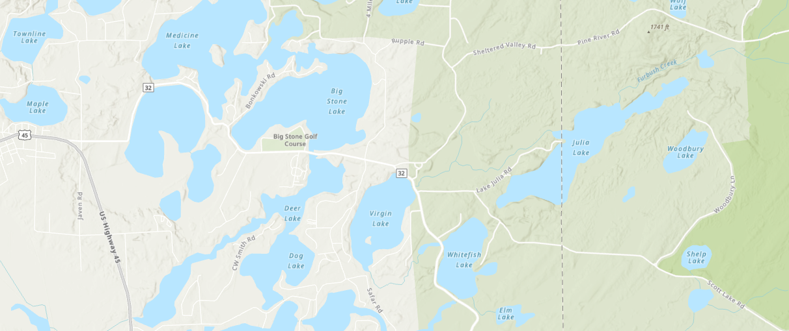

Understanding the threat — and our coordinated response to keep Lake Julia clean.
Eurasian Water Milfoil has taken root in Virgin Lake, just downstream on Julia Creek. The infestation has proven difficult to eradicate or contain. Preventing its spread to Lake Julia is a top association priority.
Primary Threat
Lake Julia is in very good condition — a comprehensive professional study by Onterra LLC (2010–13) confirmed it. But maintaining that status requires vigilance against invasive species, chief among them Eurasian Water Milfoil.
EWM can grow to form a dense mat on the lake surface, crowding out native plant life and degrading water quality and recreational use. It is visually similar to a native, non-invasive water milfoil species — distinguishing between them requires trained inspection.
For several years, small EWM patches have appeared elsewhere in the Three Lakes–Eagle River chain. More recently, EWM has taken root in Virgin Lake, just downstream from Lake Julia on Julia Creek. That infestation, while not yet large, has proven resistant to eradication efforts.
TLWA Newsletter, Fall 2021 (16 pp) — includes Onterra report on Virgin Lake
Onterra Virgin Lake Report (2 pp)
Three Lakes Waterfront Assn — photos of the Virgin Lake harvesting effort
TLWA Newsletter, Fall 2020 — detailed Virgin Lake reporting
Our Response
For several years, the Association has applied for and received state grants to fund boat inspection at the public landing on Lake Julia. Boat inspection — checking for stray aquatic plants carried in from other lakes — is one of the few practical tools available to prevent EWM from entering the lake.
The program is administered through UW Extension-Lakes at UW-Stevens Point. The state provides up to $4,000 annually in matching grants — the remainder of the ~$12,000 annual program cost is funded by resident donations.
| Item | Amount |
|---|---|
| Annual program cost | ~$12,000 |
| State grant funding | ~$4,000 |
| Needed from residents | ~$8,000 |
| Received in 2022 | $7,500 — from families across the lake |
Watch the annual program orientation video: youtube.com/watch?v=RxvZuWY10xg
Why It Matters
Beyond ecology, EWM infestations have measurable impacts on lakefront property values. A research project from 1990 to 2019 by the University of Minnesota Aquatic Invasive Species Research Center (MAISRC) summarizes the economic case for prevention.
Read: Will Property Values Cool as Aquatic Invasive Species Heat Up?
Without continued resident funding, the monitoring program cannot operate. Please consider contributing — any amount helps.